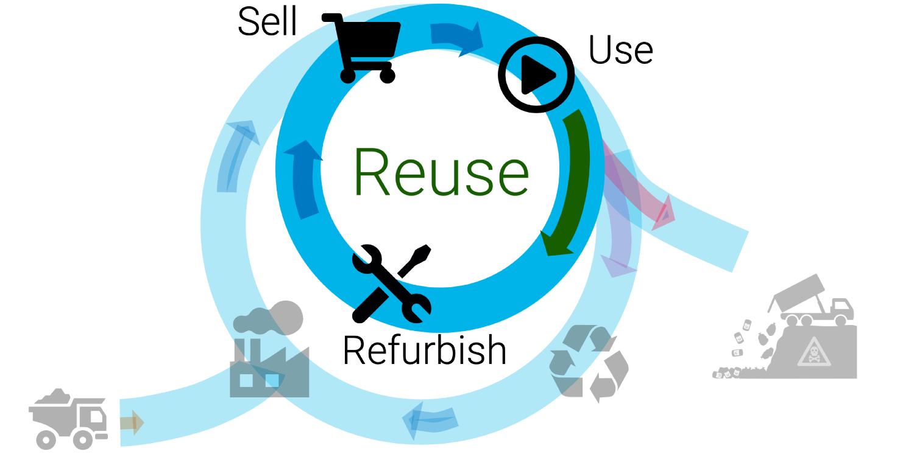
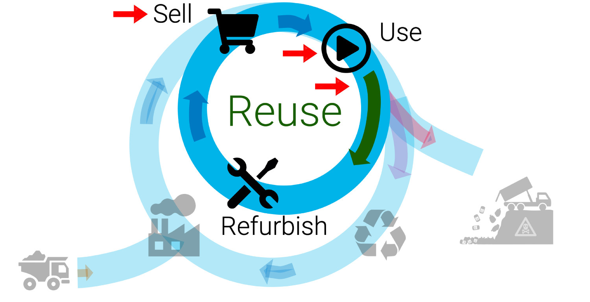
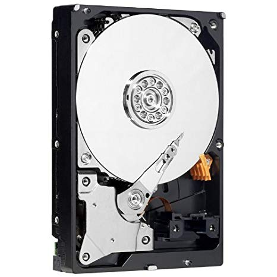
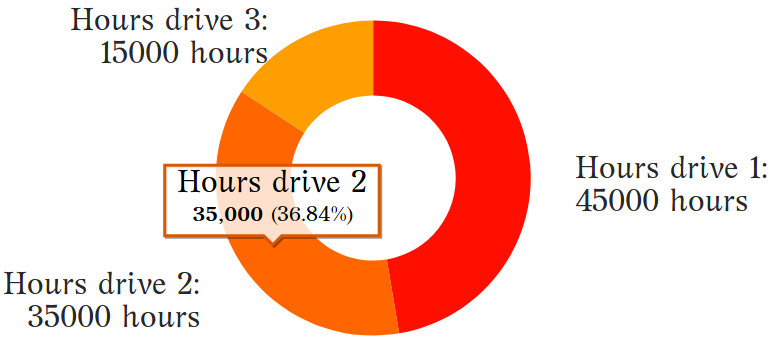
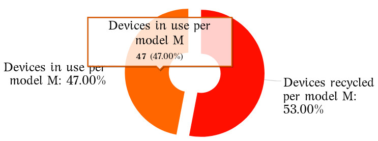
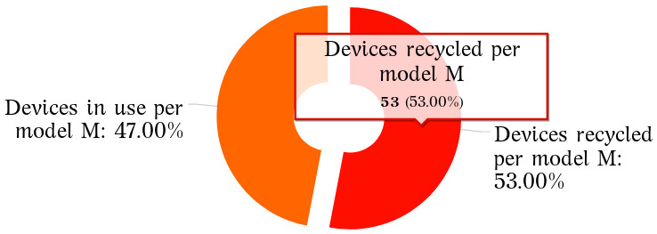
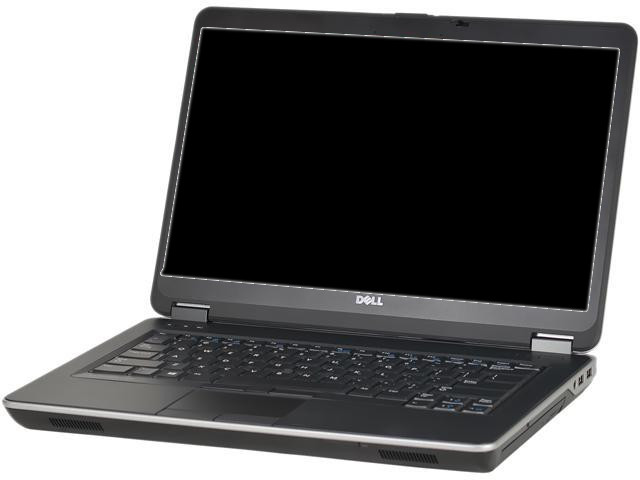
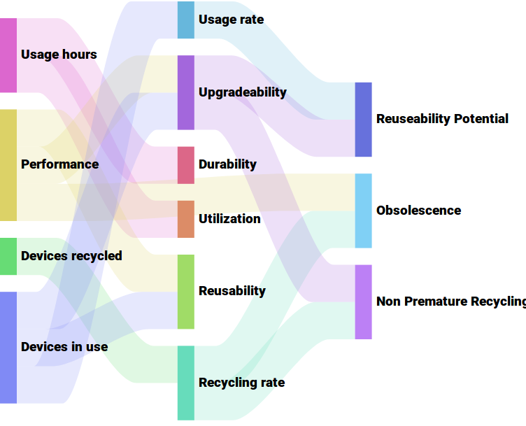

name: inverse layout: true class: center, middle, inverse --- ##An approach to measuring durability, upgradeability, reusability, obsolescence and premature recycling ###Circular Consumption and Production of Devices [comment]: <> (Consumers use the same electronic devices for the longest time, either internally, or by collaborating with external agents so that these devices are reused and recycled properly, but recycled no prematurely, only when they can no longer be used or reused by anyone else. ) .footnote[David Franquesa - david.franquesa@ac.upc.edu [UPC-Technical University of Catalonia](https://www.upc.edu) and [Electronic Reuse - ereuse.org](http://www.ereuse.org) - slides: [bit.ly/2Mr6J5y](http://bit.ly/2Mr6J5y) ] --- layout:false # Circular consumption of digital devices [comment]: <> (Introducir el contexto: grandes organizaciones que descartan productos, explicar el proceso de refurbishment)  --- layout: false .left-column[ # Agenda *** ] .right-column[ - ##Problem - ##Questions - ##Measures and metrics - ##Data and analysis - ##Conclusions [comment]: <> (4234) ] --- [comment]: <> (## Reuse and recycling non prematurely digital devices) ## Three key moments where consumers decisions impact on circular consumption  --- layout: false # Questions *** - ## Buy: How to choose the brands with the highest durability rate? - ## Usage: How much my device can be upgraded? - ## Discard: How to choose reuse centers with highest non premature recycling practices? [comment]: <> (4234) --- template: inverse ## Measures: A unique and specific quantification of data --- layout: false .left-column[ ## Measures ###Usage hours ] .right-column[ ##Usage hours per device *** ###A measure that indicates the number of hours that a particular device has been in usage.  The disk usage hours are stored on the memory of the hard drive controller. [comment]: <> (Esta información no se pierde cuando borras el disco duro) >**U: Usage hours per device D** >U(D) = `∑` usage hours of all.red[*] hard drives used in D  ] --- layout: false .left-column[ ## Measures ###Usage hours ###Performance ] .right-column[ ##Performance per device *** ###A measure that indicates the performance rate of a device. A software collects the specifications of the components (disc, memory, processor, etc...), benchmarks and aggregates in a single performance rate. > **P: Performance of Device D** > P(D) = [0,5] The resulting value ranges from 0 to 5, never reaching 5. The performance of a device over time tends to decay as its performance declines. [comment]: <> (.footnotetext[**Note**: .red[*] A software collects the specifications of the components (disc, memory, processor, etc...), benchmarks and aggregates in a single performance scoreThe resulting value ranges from 0 to 5, never reaching 5. The performance of a device over time tends to decay as its performance declines to lower percentiles.]For example, if the write speed of a hard drive is at percentile 10, this feature would get 10% of the possible points of the hard drive's speed feature. The characteristics of the components (e.g. write/read speed, size) and the components (e.g. disk, memory) are then merged together by weighted harmonic averages. ) ] --- .left-column[ ## Measures ###Usage hours ###Performance ###Devices in use ] .right-column[ ##Devices in use per model *** ###Indicates the number of devices the system knows are in use per model > **Devices in use per model**: Number of the devices in the traceability system with a proof of use [comment]: <> (Number of the devices in the traceability system with a proof of use and recycling) ] --- .left-column[ ## Measures ###Usage hours ###Performance ###Devices in use ###Devices recycled ] .right-column[ ##Devices recycled *** ###Indicates the number of devices the system knows are recycled > **Devices recyled per model**: Number of the devices in the traceability system with a proof of recycling or without a proof of use [comment]: <> (Number of the devices in the traceability system with a proof of use and recycling) ] --- template: inverse ## Metrics: Combinations of multiple measurements --- .left-column[ ## Metrics ###Durability ] .right-column[ ##Maximum Durability *** ###Indicates the maximum estimated duration of operation in hours that a device model can reach to have > The 90th percentil of the lifecycle usage hours per model [comment]: <> (ccc) .first[ Model | Manufacturer | Model Durability ------------------------------ | --------------------- | ------------- 7000 | Lenovo | 53,534 EB1007 | Asus | 51,145 HP Compaq 6005 | Hp | 44,198 ] ] --- .left-column[ ## Metrics ###Durability ###Utilization ] .right-column[ ##Utilization *** ###Indicates to what extent this device has been used in hours by comparison with durable devices of the same model >Usage hours of a device `/` Durability of the device model [comment]: <> (ccc) .first[ |Model|Man.|Device Usage| Model Durability|Device Utilization| |Veriton M400|Acer|65,332 h.| 30,043 h. |217%| |HP Compaq 6005 Pro|Hp| 64,228 h. | 44,198 h.|145% | ] ] --- .left-column[ ## Metrics ###Durability ###Utilization ###Upgradeability ] .right-column[ ##Upgradeability *** ###Indicates the potential for improvement that a device has. >1 – (Device Performance `/` Maximum Performance of Model M) [comment]: <> (ccc) .first[ |Model |Man. |Per. |Max Per.|Upgradeability| | :--------------------------: | :-----------: | :---------: | :----------: | :-----------------: | |Latitude E6300 | Dell | 1.66 | 3.92 | 58% | |HP ProBook 4500 | Hp | 3.93 | 3.95 | 1% | ] ] --- .left-column[ ## Metrics ###Durability ###Utilization ###Upgradeability ###Usage ] .right-column[ ##Usage rate per model *** ###Indicates the rate of devices per model still in usage. > Devices in use per model <sub>M</sub> `/` Total of devices per model <sub>M</sub> [comment]: <> (Cuando se recoje este valor)  ] --- .left-column[ ## Metrics ###Durability ###Utilization ###Upgradeability ###Usage ###Recycling ] .right-column[ ##Recycling rate per model *** ###Indicates the rate of devices recycled per model >Devices recycled of model <sub>M</sub> `/` Total of devices of model <sub>M</sub> [comment]: <> (Cuando se recoge este valor)  ] --- .left-column[ ## Metrics ###Durability ###Utilization ###Upgradeability ###Usage ###Recycling ###Reusability ] .right-column[ ##Reusability *** ###Indicates to what extent a device can be used with its current performance >Usage rate of devices per model and similar performance still in use #### Example: ```remark Before discarting my laptop Dell Latitude model E6440 with performance 3. I check that there are 70% of these still in use. I can safely say that it is 70% reusable. ``` [comment]: <> (ccc) ] --- template: inverse ## Compound Metrics: Combinations of multiple metrics --- .left-column[ ## Compount metrics ###Reusability Potential ] .right-column[ ##Reusability Potential *** ###Indicates to what extent a device can be used with its upgraded performance >Usage rate of devices per model with its maximum upgradeability performance #### Example: ```remark Before discard of my laptop Dell Latitude model E6440 with performance 3. I check that there are 90% of these with similar or upgraded value still in operation. I can safely say that it is 90% potentially reusable. ``` [comment]: <> (ccc) ] --- .left-column[ ## Compount metrics ###Reusability Potential ###Non Premature Recycling ] .right-column[ ##Non Premature Recycling *** ###Indicates the reusability potential we are discarding if we recycle (destroy) the device. >Non Premature Recycling of a device = Reusability Potential #### Example: ```remark I don't recycle my laptop Dell Latitude model E6440, with a 90% Reusability Potential. I am non prematurely recycling 90% of my laptop. ``` [comment]: <> (ccc) ] --- .left-column[ ## Compount metrics ###Reusability Potential ###Non Premature Recycling ###Obsolescence of a model ] .right-column[  ##Obsolescence of a model *** ###Indicates the dificulty of using a device which, even having good performance, is in low utilization. >The difference between your model's _recycling rate_ and the lowest model _recycling rate_ with similar _performance_ ```remark I have to discard my laptop model X with _performance_ 3, it has a _recycling rate_ of 80%, instead, users of the Y model with the same _performance_ has a _recycling rate_ by 30%. The obsolescence of my X model is at least of 50% (80%-30%). ``` [comment]: <> (A model should become obsolete because its performance is low and not for other reasons; that means there is some kind of obsolescence that not depends on performance of the model but factors such as impossibility to upgrade it, repair it, use it with other software, etc ...) ] --- ##Summary of measures and metrics  --- #Data and analysis ### 1. Data collection: Usage hours and performance measures are collected when hard drives are erased or devices are upgraded by reuse centers (20) ### 2. Data set: A total of 3,045 observations (devices) during 3 years, 281 models of desktops and laptops ### 3. Data filtering: We selected only those models for which we have at least 10 observations: 2,460 observations ### 4. Metrics validation: Durability, utilization and upgradeability has been validated. ### 5. Next steps: Analise recycled and in use rate measures to validate remaining metrics. [comment]: <> (This is the process we have followed) --- template: inverse # Conclusions and discussion --- [comment]: <> (## Reuse and recycling non prematurely digital devices) ## Three key moments where consumers decisions impact on circular consumption --- ##Metrics for helping to taking better circular consumption decisions - ###Buy used devices with high _reusability potential_ and ensure its _utilization_ , if you buy new products, base your election on brand _durability_ history. [comment]: <> (based on brand obsolescence and durability historics For new models this approach do not let to know durability, consumers can base their election on brand durability history ) - ###Before discarding the products try to upgrade it to the maximum _upgradeability_. - ### Select reuse centers that ensure recycling only when the _reusability potential_ is low (non premature recycling). [comment]: <> (Our approach to measuring circularity in the consumption and production of electronic devices is to focus on the performance achieved in their use phase. Performing these measurements at certain times of their usage cycle and with their respective instruments we define the metrics proposed to measure the circularity of consumers and products.) [comment]: <> ( We have four measures: the 1. usage hours, 2. performance, 3. usage rate, 4. recycling rate. In order to know the durability of the device in all its usage phases it is necessary to analyse all the hard drives it has had. The necessary instrument to collect the measurement of usage hours is a software that analyses the variables in the hard drive. In order to know the durability of the device throughout its usage phase, it is necessary to analyse all the hard drives it had. We propose that each time the data is wiped from the drive, either because there is a drive replacement or because it is reused by another user, the data erasure software employed notifies the serial number of the device, of the hard drive and the usage hours. Aggregating this information would allow to have all the hours of its usage cycles. When a hard disk is discarded, data is usually erased. We propose that it is just at the time of data erasure when data is reported: serial number of the hard disk, the serial number of the device and the hours made by the hard disk. Is it a trusted and irreversible data repository (a blockchain) the place where to store this information in order to be able to analyse it and know the total durability? DECIR QUE TENEMOS EL USAGE AND RECYCLING RATES PARA UN SUBCONJUNTO ) .footnote[David Franquesa - david.franquesa@ac.upc.edu] --- template: inverse ##An approach to measuring durability, upgradeability, reusability, obsolescence and premature recycling ###Circular Consumption and Production of Devices [comment]: <> (Consumers use the same electronic devices for the longest time, either internally, or by collaborating with external agents so that these devices are reused and recycled properly, but recycled no prematurely, only when they can no longer be used or reused by anyone else. ) .footnote[David Franquesa - david.franquesa@ac.upc.edu [UPC-Technical University of Catalonia](https://www.upc.edu) and [Electronic Reuse - ereuse.org](http://www.ereuse.org)] ---